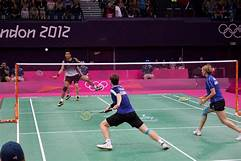

 De Olympische Spelen is een groot sportmanifest. De eerste moderne Olympische Spelen werden gehouden in 1896 deze werden gehouden in Athene. Sinds 1924 zijn er twee soorten Olympische Spelen de Zomerspelen en de Winterspelen. Badminton wordt tijdens de Zomerspelen gespeeld. Er zit tussen elke de Olympische Spelen zit 4 jaar, tot 1992 werden de Zomer- en Winterspelen tegelijkertijd gespeeld, Na 1992 is het zo gedaan dat er na de Zomerspele 2 jaar tussen zit dan de Winterspelen gespeeld worden en 2 jaar later weer de Zomerspelen.
 De laatste Zomerspelen werden gehouden in Tokio. Het werd in 2020 een jaar uitgesteld vanwege de coronamaatregelen, dus de Zomerspelen werden in 2021 gedaan van 23 juli t/m 8 augustus. Lee Yang en Wang Chi-Lin uit Taipei hebben samen goud gewonnen in de herendubbel. In de vrouwendubbel hebben Greysia Polii en Apriyani Rahayu uit Indonesie samen goud gewonnen. Huang Dongping en Wang Yilyu hebben samen goud gewonnen in de gemengd dubbel.
De laatste Zomerspelen werden gehouden in Tokio. Het werd in 2020 een jaar uitgesteld vanwege de coronamaatregelen, dus de Zomerspelen werden in 2021 gedaan van 23 juli t/m 8 augustus. Lee Yang en Wang Chi-Lin uit Taipei hebben samen goud gewonnen in de herendubbel. In de vrouwendubbel hebben Greysia Polii en Apriyani Rahayu uit Indonesie samen goud gewonnen. Huang Dongping en Wang Yilyu hebben samen goud gewonnen in de gemengd dubbel.
Viktor Axelsen heeft goud gehaald op de Olympische Spelen bij de herenenkel. Viktor Axelsen komt uit Denemarken en is geboren op 4 januari 1994 en is nu 27 jaar oud. Viktor was de eertse Europeaan die zo een grote titel heeft. Hij was in 2016 en 2018 europees kampioen.
Chen Yufei heeft goud gehaald bij de vrouwenkel op de Olympische Spelen. Chen Yufei kom uit China en is geboren op 1 maart 1998 en is nu 23 jaar oud. Ze heeft veel toernooien gewonnen en in 2019 stond ze nummer 1 van de wereld in de BWF ranking.